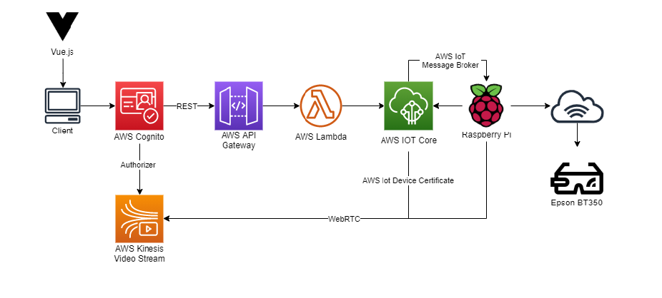

Augmented Telepresence Robot
During the culmination of my polytechnic journey, I undertook a significant endeavor known as the Final Year Project, an integral component of my diploma pursuit. Collaborating alongside my partner, Esther Yap Shi Ting, we embarked on the creation, programming, and refinement of an Augmented Telepresence Robot, skillfully integrating the capabilities of Raspberry Pi and a range of Amazon Web Services. We were tasked to improve this project from previous batches by incorporating audio to our video streaming and also allow our website to be hosted on the hosted the wide-area network.
The aim of this project is to incorporate Augmented Reality to telepresence technology in hopes to provide users with a better sense of immersion in the simulated world using an EPSON BT-350 smart glasses. The movement and video captured on the Telepresence Robot can be remotely controlled by an authenticated user via a website. As seen from the video, different users will only have access to their respective robots.
Made use of Clideo to compress video for Github. Original video can be found in our presentation slides.
With the help of Vue.js and AWS Cognito, the layout and authentication of the Website was constructed using JavaScript. This website was hosted the wide-area network using AWS S3 and CloudFront, allowing users from anywhere with internet to access their robots. The movement of the robot was controlled using specific messages send from the website to AWS IoT Core MQTT topic via AWS API Gateway and Lambda. On the other hand, video and audio streaming from the robot was achieved using AWS Kinesis Video Streams with Real-Time Communication (WebRTC).
I assumed the pivotal role of programming the Python script embedded within the robot. My responsibilities encompassed configuring the robot as an AWS IoT device, facilitating seamless connectivity. Moreover, I successfully integrated video and audio streaming onto AWS Kinesis Video, using the correct credentials. To delve deeper into the intricacies of our project, including the obstacles faced, I invite you to explore our comprehensive Final Report and Presentation.